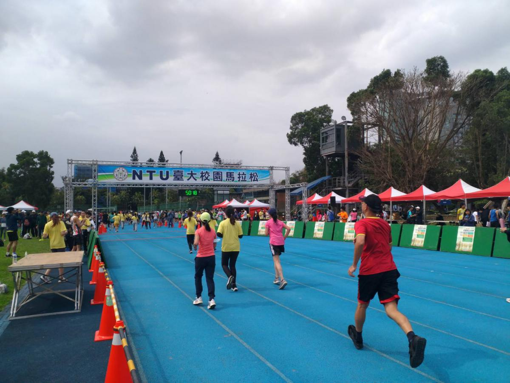

結合在地特色的永續路跑盛會
台大馬拉松是一年一度的路跑盛事，路線串連台大校園的重要地標，每年吸引約2,500名跑者參與。在有限的預算下，主辦單位致力於打造兼具特色與環保的賽事體驗。過去幾年，他們透過與校內永續社團的合作，發展出一系列在地化的永續方案。
創新實踐：從紀念衫到場佈，打造永續賽事
具體來說，台大馬拉松的環保創新包括：將紀念衫改用回收寶特瓶製作、獎牌選用再生材質、場佈物件採用組合式設計以實現年年重複使用。這些改善的背後，有著減少環境衝擊、創造賽事特色、響應校園永續政策的多重考量。
經過幾年的努力，他們每年已經可以減少約2,500個寶特瓶的製造，90%的場佈物件也能重複使用。值得一提的是，場佈部分是透過與校內環保社團的合作，確保賽事垃圾能夠確實分類回收。
永續轉型帶來的環境與社會效益
除了在實際資源使用上的改善，台大馬拉松的永續轉型也帶來了更廣泛的影響。在環境方面，他們的努力已經有效減少了廢棄物的產生，同時提升了資源的使用效率。而在社會層面，這些作為也成功帶動了參賽者的環保意識，有跑者會主動提供改善建議，與主辦方一同打造更永續的賽事。
台大馬拉松在推動永續創新的過程中，與多方利害關係人展開了密切合作。其中，與本地環保紡織廠的長期協作最值得關注。透過共同研發環保布料，並簽訂長期合作約定，雙方在季度檢討會議中持續優化材質。這種合作模式不僅讓廠商獲得了寶貴的產品開發數據，也為賽事帶來獨家設計和優惠。
而為了應對執行層面的挑戰，主辦單位也在志工團隊的建議下，建立了完善的物品管理系統，有效追蹤每一件物品的使用狀況。這個系統的建立，讓永續物料的清潔、保養與收納更加制度化，為長期的永續經營奠定了基礎。
經驗累積與反思，為永續發展創造系統性條件
回顧這些年推動永續改善的歷程，台大馬拉松的經驗給了我們寶貴的啟示：永續轉型需要系統性的規劃，從教育宣導、執行操作到回收處理，每一個環節都不容忽視。而在實踐中，他們也有了意外的收穫——很多跑者是認同永續理念的，願意支持相關的嘗試。
展望未來，台大馬拉松還有諸多優化空間。短期內，他們希望推動環保杯租借系統，以減少一次性杯具的使用；長遠來看，打造零廢棄賽事、發展台大特色的永續賽事模式，是他們的終極願景。
而要實現這個願景，需要更多校內外單位的合作，以及穩定的資金支持。相信在各方的共同努力下，台大馬拉松一定能夠成為大學路跑賽事永續發展的典範。